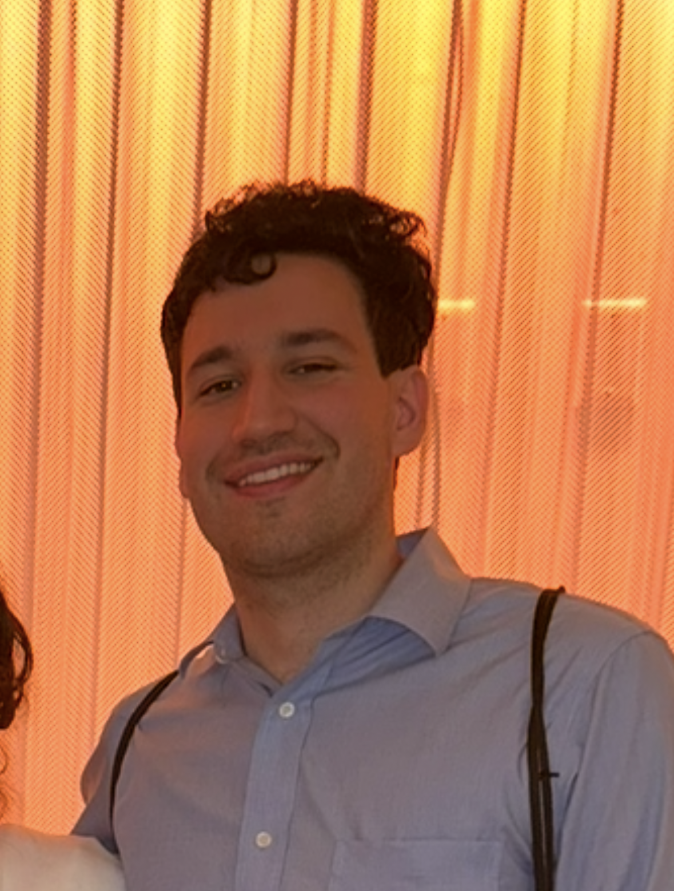

Laboratory data scientist and AI engineer at Merck building LLM-powered tools and scientific data infrastructure for drug discovery. Biomedical engineering background, pursuing a data science M.S.E. at the University of Pennsylvania.
I'm a DMPK data scientist with 4 years of experience building ML/AI tools and data infrastructure for drug discovery at Merck. I've contributed systems that let scientists interrogate their data in plain language, pipelines that unify decades of fragmented PK records, and dashboards that collapse multiple platforms into one interface. I have a passion for connecting biochemistry and computation to leverage data science to identify viable drug candidates faster, so treatments reach the people who need them sooner.
Built an agentic AI system over departmental standard operating procedures using a generative AI API. Scientists ask natural language questions about compounds, assay protocols, and PK results and get answers grounded in source documents. Uses TF-IDF retrieval for protocol-to-calculation mapping, automated monthly re-indexing from SharePoint, and a feedback loop that summarizes response quality to iteratively improve prompts.
Leading unification of 20+ years of pharmacokinetics data (~5M+ rows) from Watson LIMS, CRO feeds, and a legacy electronic laboratory notebook into a single SEND-compliant pipeline. Enables downstream PK analysis and ML on ADMET parameters across the full discovery compound space.
Full-stack Flask application unifying experiment result data from the current Signals ELN and a legacy notebook system. Scientists use a single interface to query and explore assay results across both platforms, starting with Tier 2 assays and expanding to Tier 1.
Authored rich semantic annotations across laboratory database schemas — documenting what each table and column means in the context of specific PK/ADME assays, how fields relate to experimental workflows, and what scientific assumptions are embedded in the data. This context layer enables LLMs to correctly interpret and query structured scientific data, powering text-to-SQL and RAG systems that would otherwise hallucinate on domain-specific terminology.
CNN-based model predicting alarms on 100+ controlled temperature units across multiple sites using leading performance indicators. Deployed on AWS SageMaker for proactive alerting before equipment failures.
Tool that parses Sciex OS output files from mass spectrometers and matches spectral values against a database of chemical names and SMILES strings. Targeting publication and packaged deployment for broader lab use.
Building agentic AI systems and data infrastructure for DMPK discovery scientists. Deploying LLM-powered tools for protocol querying, leading PK data centralization across fragmented legacy systems, and partnering directly with scientists to ship production tools for daily use.
Shipped full-stack applications, CI/CD data pipelines into Amazon Redshift, and lab automation tracking systems serving the Drug Metabolism organization. Mentored a data science intern on a CNN predictive maintenance project deployed to SageMaker.
Epigenetics research analyzing large-scale NIH genomic datasets. Built computational workflows for processing high-throughput sequencing data using bedtools, Unix, and R.
Automated manufacturing data extraction pipelines in a GxP-regulated environment, saving 40 hours/month of manual work.
I love music and art, and the culture that can be created through them. Listen to my band for Mario themed island indie rock Pianta. I love learning languages and traveling, I'm conversational in Spanish and Japanese. It's an honor to be able to be as connected to the world through music and travel as we can now, and I plan to use that ability to the fullest!
Originally from South Jersey, currently living in Philadelphia, PA.